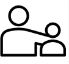
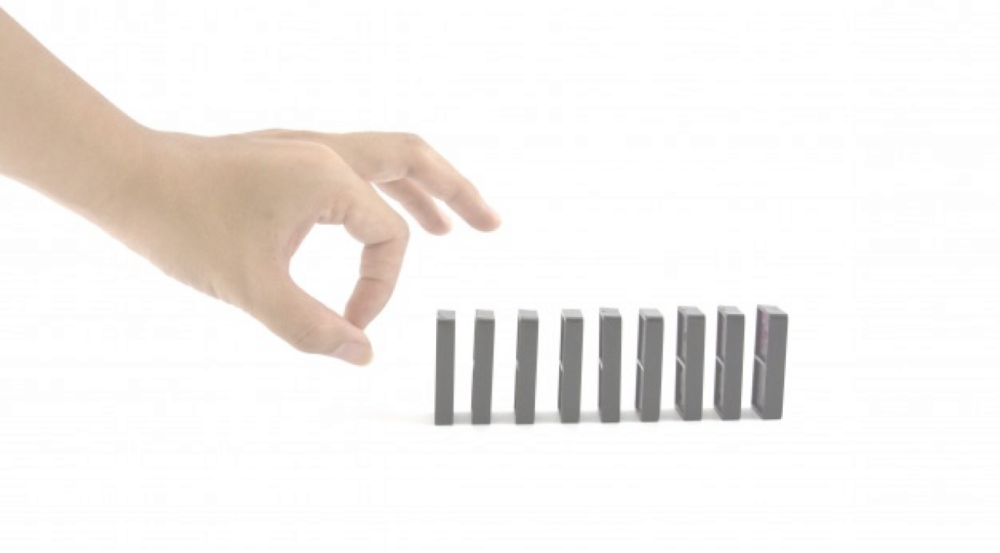
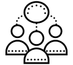
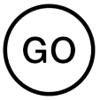
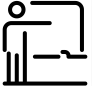
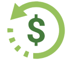
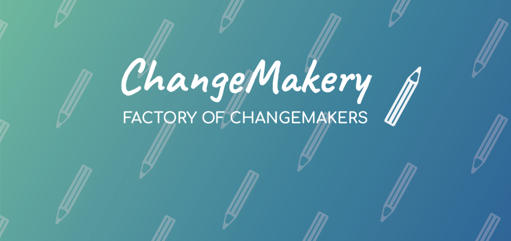

La première « startup factory » gérée par des étudiants
entrepreneurs en stage, désireux d’apprendre l’entrepreneuriat
social en étant acteur de changement.

Nous voulons répondre au besoin grandissant des jeunes générations
afin de donner du sens à leur carrière à travers l’entrepreneuriat social.

COMMENT
L’ONU a fixé 17 objectifs pour sauver le monde qui sont autant
de sources d’inspiration pour entreprendre.

Construire un ecosystème d'acteurs afin
d'avoir un réel impact est au coeur de notre démarche.
DEVENEZ PARTENAIRE

Vous êtes acteur du changement et vous voulez augmenter votre
impact en rejoignant notre ecosystème.

Vous êtes acteur de l'éducation et vous souhaitez nous
aider à fournir le meilleur aux étudiants.

Vous êtes investisseur responsable et vous voulez financer
un projet à réelle valeur ajoutée.
Change Makery
Rejoignez l'ecosystème du changement

NOUS SOMMES
La première « startup factory » gérée par des étudiants
entrepreneurs en stage, désireux d’apprendre l’entrepreneuriat
social en étant acteur de changement.
Nous voulons répondre au besoin grandissant des jeunes générations
afin de donner du sens à leur carrière à travers l’entrepreneuriat social.
COMMENT
L’ONU a fixé 17 objectifs pour sauver le monde qui sont autant
de sources d’inspiration pour entreprendre.
Construire un ecosystème d'acteurs afin
d'avoir un réel impact est au coeur de notre démarche.
Vous êtes acteur du changement et vous voulez augmenter votre
impact en rejoignant notre ecosystème.
Vous êtes acteur de l'éducation et vous souhaitez nous
aider à fournir le meilleur aux étudiants.
Vous êtes investisseur responsable et vous voulez financer
un projet à réelle valeur ajoutée.